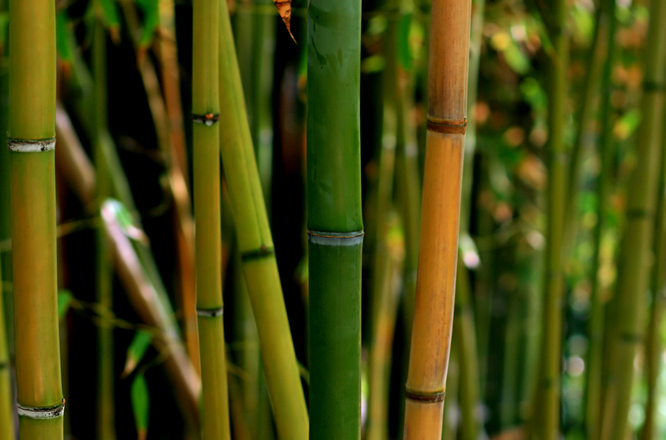

Plantas
Ajo
Es un gran protector. Los marineros lo llevan mientras a bordo del
barco para protegerse de los naufragios. Los soldados lo llevaban en la
Edad Media para defenderse, y los soldados rom anos lo com ían para que les diera valor. Se pone en casa para evitar la intrusión del mal, para mantener alejados a los ladrones, y se cuelga en la puerta para
repeler a las personas envidiosas. El ajo protege las casas nuevas.
Si se lleva consigo, protege del mal tiempo y de los monstruos; también lo defiende de los golpes del enemigo.
Muerda un ajo para ahuyentar los malos intrusos, o esparza su polvo por el suelo. También se pone bajo las almohadas de los niños para protegerlos mientras duermen. Las novias llevaban un diente de ajo en el bolsillo para que les diera suerte y m antuviese alejado el mal en el día desu boda.
Si se frota sobre las cacerolas y sartenes antes de cocinar elimina las vibraciones negativas que podrían contaminar los alimentos. Si se come, actúa como inductor del deseo sexual.

Albahaca
El agradable perfume de
la albahaca fresca produce simpatía
entre dos personas, y por eso se emplea
para apaciguar el mal carácter entre los
amantes. Se añade a los inciensos de amor y a los saquilos, y las hojas frescas se frotan co n tra la piel a modo de perfume amoroso natural.
Esta planta proporciona riqueza a aquellos que la llevan en los bolsillos, y se utiliza para atraer clientes a un negocio colocando un poco en
la caja registradora o en el marco de la puerta.
Finalmente, como regalo trae buena suerte a un nuevo hogar.
Almendra
Las almendras, lo
mismo que las hojas y la madera del árbol, se utilizan en los hechizos para obtener prosperidad y dinero. Adicionalmente, se dice que trepar a un almendro asegura el éxito en inversiones comerciales.
Las varas mágicas están hechas de madera de almendro, ya que es una planta de Aire, que es regente elemental de la vara mágica en algunas tradiciones. Llevar almendras en los bolsillos le conducirá a un tesoro.
Aloe
El áloe, planta popular de interiores, también es protectora. Protege de las influencias malignas y previene los accidentes en casa.
Arroz
El arroz regado sobre el tejado protege contra los infortunios. Sirve como amuleto contra el mal. Un frasco pequeño de arroz colocado cerca de la entrada de la casa también protege.
Bambú
Grabe su deseo sobre un trozo de bambú y entiérrelo en un lugar apartado. O, grabe un símbolo protector sobre un trozo de bambú y plántelo en el
patio para proteger su casa y atraer la buena fortuna.
La madera de bambú nunca cambia de color, por lo que se coloca sobre la puerta para atraer buena suerte.
Banana
La banana se emplea para la fertilidad y también para los hechizos de dinero y prosperidad.